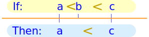
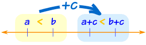
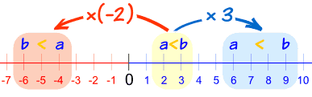
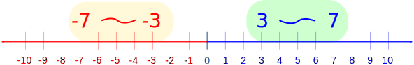
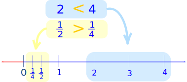

Properties of Inequalities
Inequality tells us about the relative size of two values.
(You might like to read a gentle Introduction to Inequalities first)
The 4 Inequalities
| Symbol |
Words |
Example |
|---|---|---|
|
> |
greater than |
x+3 > 2 |
|
< |
less than |
7x < 28 |
|
≥ |
greater than or equal to |
5 ≥ x−1 |
|
≤ |
less than or equal to |
2y+1 ≤ 7 |

The symbol "points at" the smaller value
Properties
Inequalities have properties ... all with special names!
Here we list each one, with examples.
Note: the values a, b and c we use below are Real Numbers.
Transitive Property
When we link up inequalities in order, we can "jump over" the middle inequality.

If a < b and b < c, then a < c
Likewise:
If a > b and b > c, then a > c
Example:
- If Alex is older than Billy and
- Billy is older than Carol,
then Alex must be older than Carol also!
Reversal Property
We can swap a and b over, if we make sure the symbol still "points at" the smaller value.
- If a > b then b < a
- If a < b then b > a
Example: Alex is older than Billy, so Billy is younger than Alex
Law of Trichotomy
The "Law of Trichotomy" says that only one of the following is true:
It makes sense, right? a must be either less than b or equal to b or greater than b. It must be one of those, and only one of those.
Example: Alex Has More Money Than Billy
We could write it like this:
a > b
So we also know that:
- Alex does not have less money than Billy (not a<b)
- Alex does not have the same amount of money as Billy (not a=b)
(Of course!)
Addition and Subtraction
Adding c to both sides of an inequality just shifts everything along, and the inequality stays the same.

If a < b, then a + c < b + c
Example: Alex has less money than Billy.
If both Alex and Billy get $3 more, then Alex will still have less money than Billy.
Likewise:
- If a < b, then a − c < b − c
- If a > b, then a + c > b + c, and
- If a > b, then a − c > b − c
So adding (or subtracting) the same value to both a and b will not change the inequality
Multiplication and Division
When we multiply both a and b by a positive number, the inequality stays the same.
But when we multiply both a and b by a negative number, the inequality swaps over!

Notice that a<b becomes b<a after multiplying by (-2)
But the inequality stays the same when multiplying by +3
Here are the rules:
- If a < b, and c is positive, then ac < bc
- If a < b, and c is negative, then ac > bc (inequality swaps over!)
A "positive" example:
Example: Alex's score of 3 is lower than Billy's score of 7.
a < b
If both Alex and Billy manage to double their scores (×2), Alex's score will still be lower than Billy's score.
2a < 2b
But when multiplying by a negative the opposite happens:
But if the scores become minuses, then Alex loses 3 points and Billy loses 7 points
So Alex has now done better than Billy!
−a > −b
Why does multiplying by a negative reverse the sign?
Well, just look at the number line!
For example, from −3 to −7 is a decrease, but from 3 to 7 is an increase.

So the inequality sign reverses (from < to >)
Additive Inverse
As we just saw, putting minuses in front of a and b changes the direction of the inequality. This is called the "Additive Inverse":
- If a < b then −a > −b
- If a > b then −a < −b
This is really the same as multiplying by (-1), and that is why it changes direction.
Example: Alex has more money than Billy, and so Alex is ahead.
But a new law says "all your money is now a debt you must repay with hard work"
So now Alex is worse off than Billy.
Multiplicative Inverse
Taking the reciprocal (1/value) of both a and b can change the direction of the inequality.

When a and b are both positive or both negative:
- If a < b then 1/a > 1/b
- If a > b then 1/a < 1/b
Example: Alex and Billy both complete a journey of 12 kilometers.
Alex runs at 6 km/h and Billy walks at 4 km/h.
Alex’s speed is greater than Billy’s speed
6 > 4
But Alex’s time is less than Billy’s time:
12/6 < 12/4
2 hours < 3 hours
But when either a or b is negative (not both) the direction stays the same:
- If a < b then 1/a < 1/b
- If a > b then 1/a > 1/b
Example: a = +7 and b = −3
a > b, and one of them is negative, so:
1+7 > 1−3
17 > −13
Non-Negative Property of Squares
A square of a number is greater than or equal to zero:
a2 ≥ 0
Example:
- (3)2 = 9
- (−3)2 = 9
- (0)2 = 0
Always greater than (or equal to) zero
Square Root Property
Taking a square root will not change the inequality (but only when both a and b are greater than or equal to zero).
If a ≤ b then √a ≤ √b
(for a,b ≥ 0)
Example: a=4, b=9
- 4 ≤ 9 so √4 ≤ √9